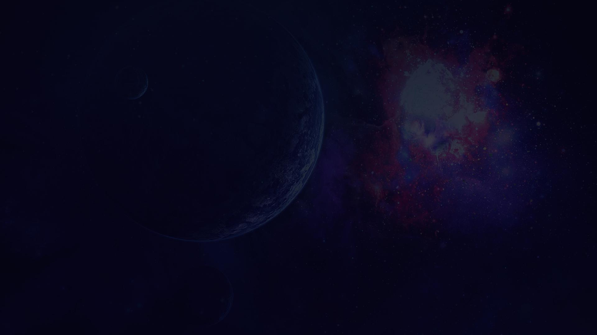

Меркурий
Меркурий — ближайшая к Солнцу планета Солнечной системы, наименьшая из планет земной группы. Названа в честь древнеримского бога торговли — быстрого Меркурия, поскольку она движется по небу быстрее других планет. Период обращения вокруг Солнца занимает всего 87,97 дней, самый короткий из всех планет Солнечной системы.
Видимое расстояние Меркурия от Солнца, если смотреть с Земли, никогда не превышает 28°. Эта близость к Солнцу означает, что планету можно увидеть только после захода солнца или до восхода солнца, обычно в сумерках. Планета телескопически отображает полный диапазон фаз, подобно Венере и Луне, когда она движется по своей внутренней орбите относительно Земли, которая повторяется в течение её синодического периода — примерно каждые 116 дней.
Астрономические характеристики
Видимая звёздная величина Меркурия колеблется от −1,9m до 5,5m, но его нелегко заметить по причине небольшого углового расстояния от Солнца (максимум 28,3°).
Наиболее благоприятные условия для наблюдения Меркурия — в низких широтах и вблизи экватора: это связано с тем, что продолжительность сумерек там наименьшая. В средних широтах найти Меркурий гораздо труднее и возможно только в период наилучших элонгаций. В высоких широтах планету практически никогда (за исключением затмений) нельзя увидеть на тёмном ночном небе: Меркурий виден в течение очень небольшого промежутка времени после наступления сумерек.
Наиболее благоприятные условия для наблюдения Меркурия в средних широтах обоих полушарий складываются около равноденствий (продолжительность сумерек при этом минимальная). Оптимальным временем для наблюдений планеты являются утренние или вечерние сумерки в периоды его элонгаций (периодов максимального удаления Меркурия от Солнца на небе, наступающих несколько раз в год).
Астрономический символ Меркурия представляет собой стилизованное изображение крылатого шлема бога Меркурия с его кадуцеем.
Небесная механика Меркурия
Меркурий обращается по своей орбите вокруг Солнца с периодом около 88 земных суток. Продолжительность одних звёздных суток на Меркурии составляет 58,65 земных, а солнечных — 176 земных. Меркурий движется вокруг Солнца по довольно сильно вытянутой эллиптической орбите (эксцентриситет 0,205) на среднем расстоянии 57,91 млн км (0,387 а.е.). В перигелии Меркурий находится в 45,9 млн км от Солнца (0,3 а.е.), в афелии — в 69,7 млн км (0,46 а.е.), таким образом, в перигелии Меркурий более чем в полтора раза ближе к Солнцу, чем в афелии. Наклон орбиты к плоскости эклиптики равен 7°. На один оборот по орбите Меркурий затрачивает 87,97 земных суток. Средняя скорость движения планеты по орбите — 48 км/с (в афелии — 38,7 км/с, а в перигелии — 56,6 км/с). Расстояние от Меркурия до Земли меняется от 82 до 217 млн км. Поэтому при наблюдении с Земли, Меркурий за несколько дней изменяет своё положение относительно Солнца от запада (утренняя видимость) к востоку (вечерняя видимость).
Оказалось, что меркурианские звёздные сутки равны 58,65 земных суток, то есть 2/3 меркурианского года. Такое соотношение периодов вращения вокруг оси и обращения Меркурия вокруг Солнца является уникальным для Солнечной системы явлением. Оно, предположительно, объясняется тем, что приливное воздействие Солнца отбирало момент количества движения и тормозило вращение, которое было первоначально более быстрым, до тех пор, пока оба периода не оказались связаны целочисленным отношением. В результате за один меркурианский год Меркурий успевает повернуться вокруг своей оси на полтора оборота. То есть если в момент прохождения Меркурием перигелия определённая точка его поверхности обращена точно к Солнцу, то при следующем прохождении перигелия к Солнцу будет обращена в точности противоположная точка поверхности, а ещё через один меркурианский год Солнце снова вернётся в зенит над первой точкой. В результате солнечные сутки длятся на Меркурии 176 земных суток. Продолжительность меркурианского дня (и соответственно ночи) равна продолжительности меркурианского года.
В результате такого движения планеты на ней можно выделить «горячие долготы» — два противоположных меридиана, которые попеременно обращены к Солнцу во время прохождения Меркурием перигелия, и на которых из-за этого бывает особенно горячо даже по меркурианским меркам.
Поскольку на Меркурии нет смены времён года, рядом с полюсами есть области, которые солнечные лучи не освещают. Исследования, проведённые с помощью радиотелескопа в Аресибо, позволяют предположить, что в этой холодной и тёмной зоне существуют ледники. Слой водяного льда может достигать 2 м; он, вероятно, покрыт слоем пыли.
Магнитное поле
Меркурий обладает магнитным полем, напряжённость которого, по результатам измерения «Маринера-10», примерно в 100 раз меньше земного и составляет ~300 нТл[2]. Магнитное поле Меркурия имеет дипольную структуру и в высшей степени симметрично[43], а его ось всего на 10 градусов отклоняется от оси вращения планеты, что налагает существенное ограничение на круг теорий, объясняющих его происхождение. Магнитное поле Меркурия, возможно, образуется в результате эффекта динамо, то есть так же, как и на Земле. Этот эффект является результатом циркуляции вещества в жидком ядре планеты. Из-за выраженного эксцентриситета орбиты планеты и близости к Солнцу возникает чрезвычайно сильный приливный эффект. Он поддерживает ядро в жидком состоянии, что необходимо для проявления «эффекта динамо». В 2015 году учёные из США, Канады и России оценили нижнюю границу среднего возраста магнитного поля Меркурия в 3,7–3,9 миллиарда лет.
Магнитное поле Меркурия достаточно сильное, чтобы влиять на движение солнечного ветра вокруг планеты, создавая магнитосферу. Магнитосфера планеты, хотя и настолько мала, что может поместиться внутри Земли, достаточно мощная, чтобы захватить заряженные частицы (плазму) солнечного ветра. Результаты наблюдений, полученные «Маринером-10», указывают на существование низкоэнергетической плазмы в магнитосфере с ночной стороны планеты. В «подветренном» хвосте магнитосферы были обнаружены всплески высокоэнергетических частиц, что указывает на динамические качества магнитосферы планеты.
Во время второго пролёта мимо планеты 6 октября 2008 года «Мессенджер» обнаружил, что магнитное поле Меркурия может иметь значительное количество «окон» — зон со сниженной напряжённостью магнитного поля. Приборы космического аппарата обнаружили явление магнитных вихрей — сплетённых узлов магнитного поля, соединяющих аппарат с магнитным полем планеты. Вихрь достигал 800 км в поперечнике, что составляет треть радиуса планеты. Такая вихревая форма магнитного поля порождается солнечным ветром. Так как солнечный ветер обтекает магнитное поле планеты, силовые линии магнитного поля связываются с плазмой солнечного ветра и увлекаются им, завиваясь в вихреподобные структуры. Эти вихри магнитного поля формируют «окна» в планетарном магнитном щите, через которые заряженные частицы солнечного ветра проникают сквозь него и достигают поверхности Меркурия. Процесс связи планетного и межпланетного магнитных полей, названный магнитным пересоединением, — обычное явление в космосе. Оно наблюдается и в магнитосфере Земли, при этом возникают магнитные вихри. Однако, по наблюдениям «Мессенджера», частота присоединения магнитного поля к плазме солнечного ветра в магнитосфере Меркурия в 10 раз выше.
Атмосфера
При пролёте космического аппарата «Маринер-10» мимо Меркурия было установлено наличие у планеты предельно разреженной атмосферы, давление которой в 5⋅1011 раз меньше давления земной атмосферы. В таких условиях атомы чаще сталкиваются с поверхностью планеты, чем друг с другом. Атмосферу составляют атомы, захваченные из солнечного ветра или выбитые солнечным ветром с поверхности, — гелий, натрий, кислород, калий, аргон, водород. Среднее время жизни отдельного атома в атмосфере — около 200 суток.
Имеющихся у Меркурия магнитного поля и гравитации недостаточно для сохранения атмосферных газов от диссипации и поддержания плотной атмосферы. Близость к Солнцу влечёт мощнейший солнечный ветер и высокие температуры (при сильном нагреве газы активнее покидают атмосферу). В то же время Марс, обладающий почти равной с Меркурием гравитацией, но расположенный в 4-5 раз дальше от Солнца, даже без магнитного поля не растерял атмосферу полностью на диссипацию в космос.
Водород и гелий, вероятно, поступают на планету с солнечным ветром, диффундируя в её магнитосферу, и затем уходят обратно в космос. Радиоактивный распад элементов в коре Меркурия является другим источником гелия, а также аргона-40, образующегося в результате распада слаборадиоактивного природного изотопа калия-40. Присутствуют водяные пары, выделяющиеся в результате ряда процессов, таких как удары комет о поверхность планеты, образование воды из водорода солнечного ветра и кислорода, содержащегося в оксидах пород и минералов, сублимация льда, который, возможно, находится в постоянно затенённых полярных кратерах. Нахождение значительного числа связанных с водой ионов, таких как O+, OH− и H2O+, стало неожиданностью для исследователей.
Кратеры
Кратеры на Меркурии варьируют от маленьких впадин, имеющих форму чаши, до многокольцевых ударных кратеров, имеющих в поперечнике сотни километров. Они находятся на разных стадиях разрушения. Есть относительно хорошо сохранившиеся кратеры с длинными лучами вокруг них, которые образовались в результате выброса вещества в момент удара. Некоторые кратеры разрушены очень сильно. Меркурианские кратеры отличаются от лунных меньшим размером окружающего ореола выбросов, из-за большей силы тяжести на Меркурии.
Природные условия
Близость к Солнцу и довольно медленное вращение планеты, а также крайне разрежённая атмосфера приводят к тому, что на Меркурии наблюдаются самые резкие перепады температур в Солнечной системе. Этому способствует также рыхлая поверхность Меркурия, которая плохо проводит тепло (а при практически отсутствующей атмосфере тепло может передаваться вглубь только за счёт теплопроводности). Поверхность планеты быстро нагревается и остывает, но уже на глубине в 1 м суточные колебания перестают ощущаться, а температура становится стабильной, равной приблизительно +75 °C.
Средняя температура его дневной поверхности равна 623 К (349,9 °C), ночной — 103 К (−170,2 °C). Минимальная температура на Меркурии равна 90 К (−183,2 °C), а максимум, достигаемый в полдень на «горячих долготах» при нахождении планеты близ перигелия, — 700 К (426,9 °C).
{kind=link}
{kind=link}
{kind=link}